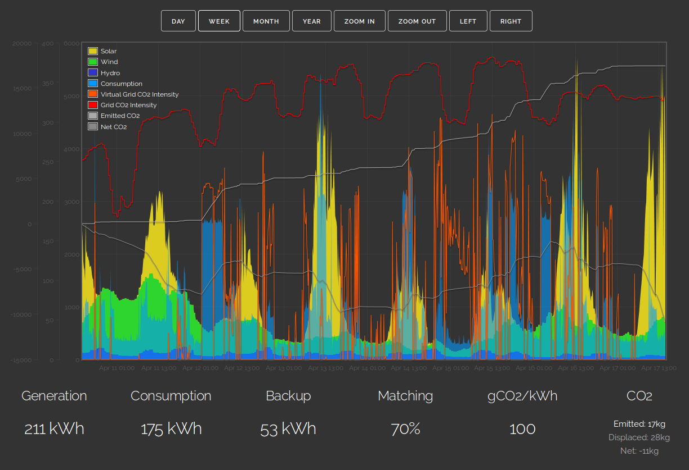

Models such as Zero Carbon Britain from the Center for Alternative Technology provide a strong working template showing how a zero carbon energy system can work in the UK. This initiative uses real-time data both from participating households and the wider grid in order to test these scenarios in the present.
There are interesting questions to be answered about how much can be gained from a more engaged relationship with our energy supply. Can we reduce the degree to which storage is needed through a more active involvement in our energy systems? Or will we choose to solve our desire for instant availability of power with more technology? How much can we adjust our consumption to match when the sun shines or the wind blows?
We are currently looking for UK based households with a keen interest in energy transition and zero carbon to join this virtual smart grid test. This is an open research project focusing to start with on getting the questions and metrics right - currently in the early development stage.
The following graph shows the aggergated renewable supply for members of the smart grid test, it consists of real-time onsite solar generation data and a share of uk wind and hydro generation to reflect use of green energy tariffs. Overlayed on this is the UK grid carbon intensity which reflects wider grid demand and supply sources.
At present the community demand profile is only accessible to members as we dont yet have enough users for the demand profile to provide sufficient anonymity.
